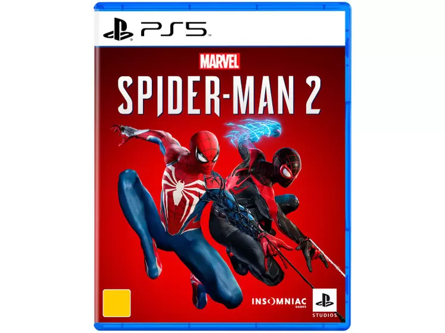
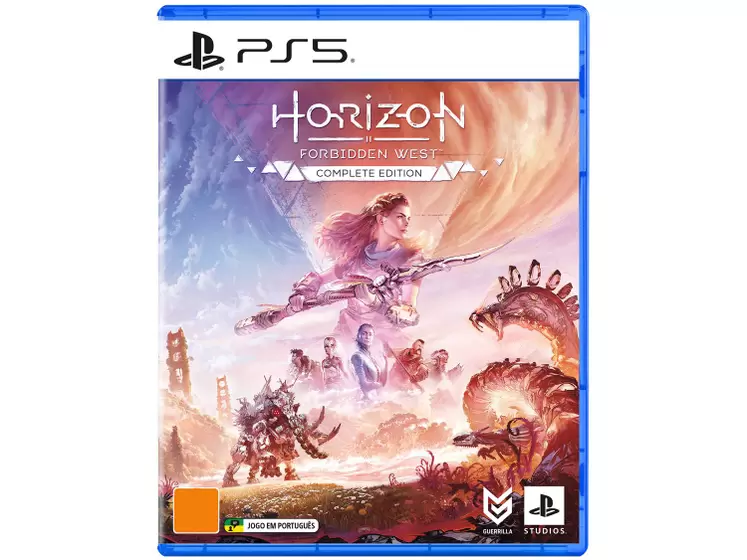
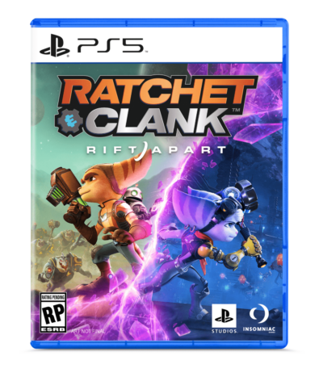

O PlayStation 5 (PS5) é a quinta geração do console de jogos eletrônicos da série PlayStation, desenvolvido pela Sony Interactive Entertainment. Anunciado em outubro de 2018 e lançado em novembro de 2020, o PS5 representou um grande salto tecnológico em relação ao seu antecessor, o PlayStation 4.
Com um design moderno, o console trouxe inovações como um SSD personalizado para leitura de dados de alta velocidade, melhorias no desempenho gráfico, uma GPU AMD personalizada capaz de suportar Ray-tracing, resolução 4K e até 120 quadros por segundo.
A Sony também introduziu o controle DualSense, que oferece feedback tátil imersivo, gatilhos adaptativos e um microfone integrado. O PS5 manteve a retrocompatibilidade com a maioria dos jogos do PlayStation 4 e PlayStation VR.
Desde o seu lançamento, o PS5 tem sido bem recebido pela crítica e pelo público, consolidando a posição da Sony como uma das líderes no mercado de consoles de videogame.
Os jogos do PS5 são uma parte essencial da experiência do console. Alguns dos jogos mais notáveis e aguardados para o PS5 incluem:
|  |
|
 |  |